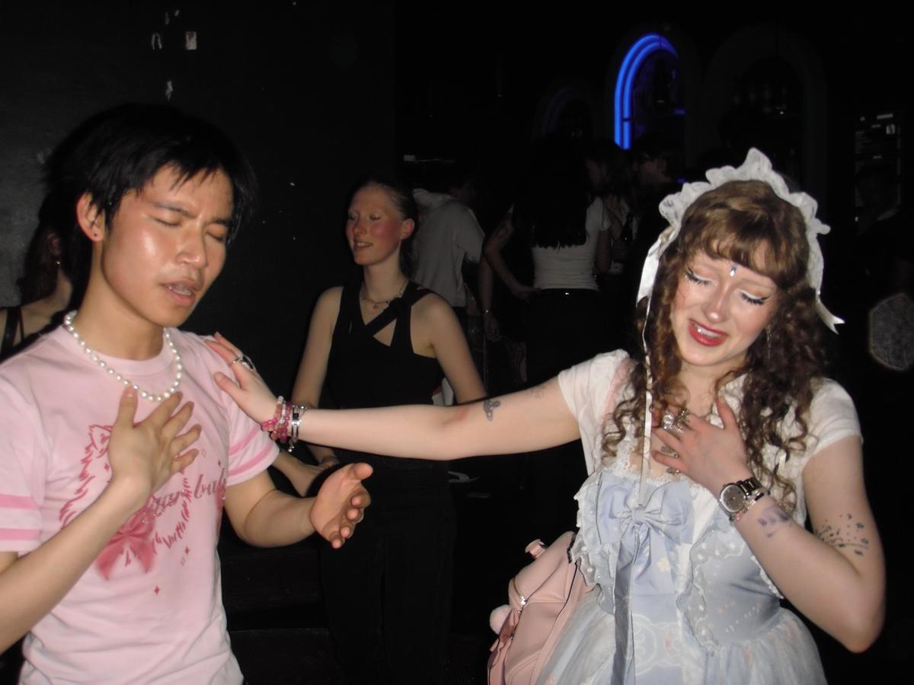
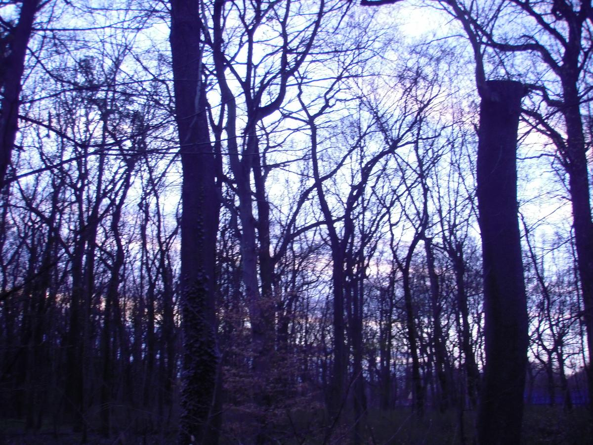
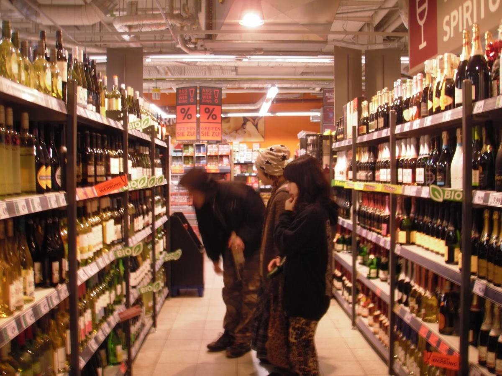
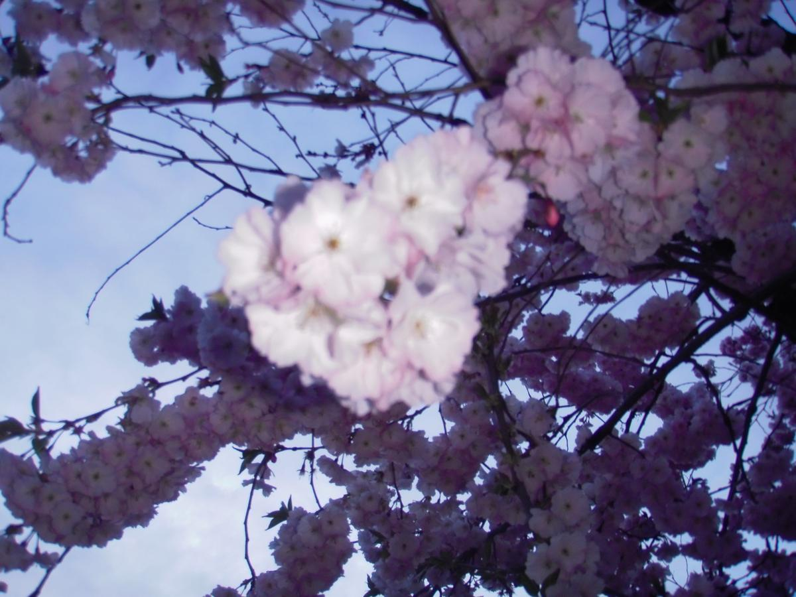
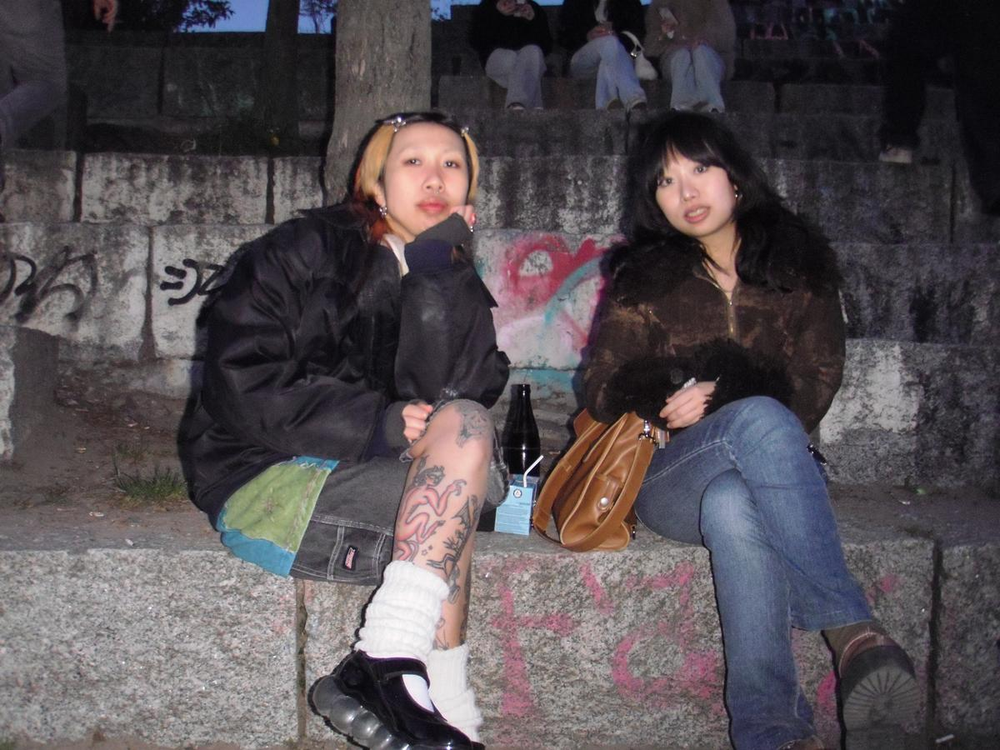
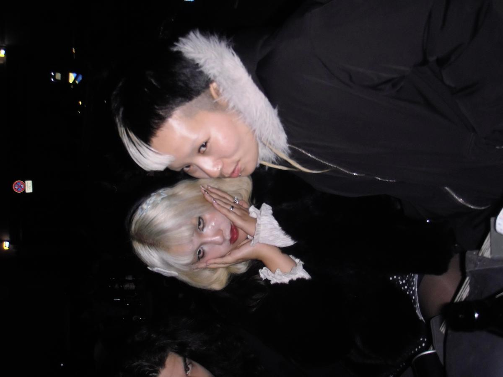
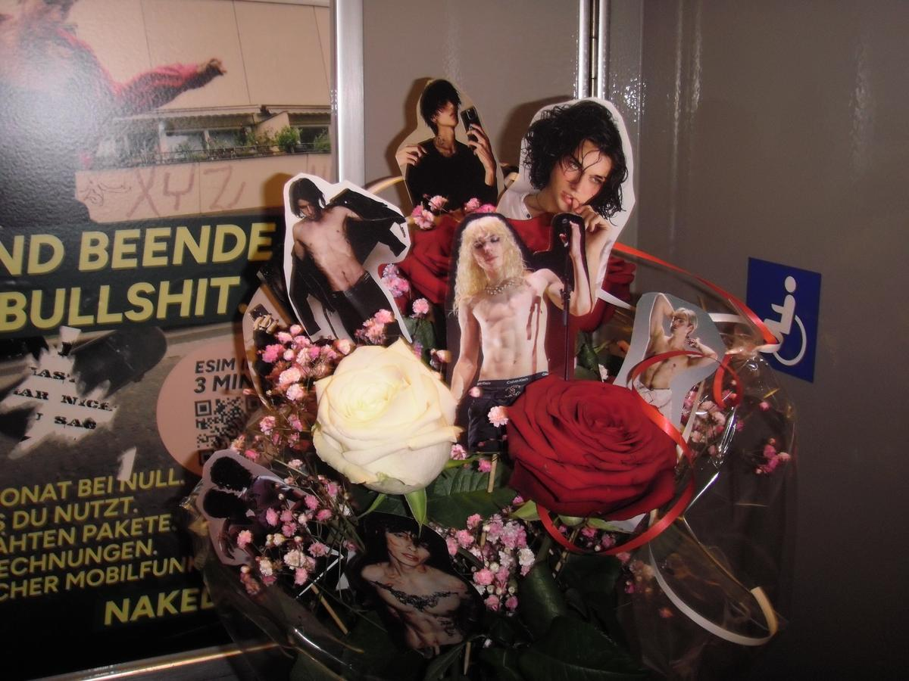
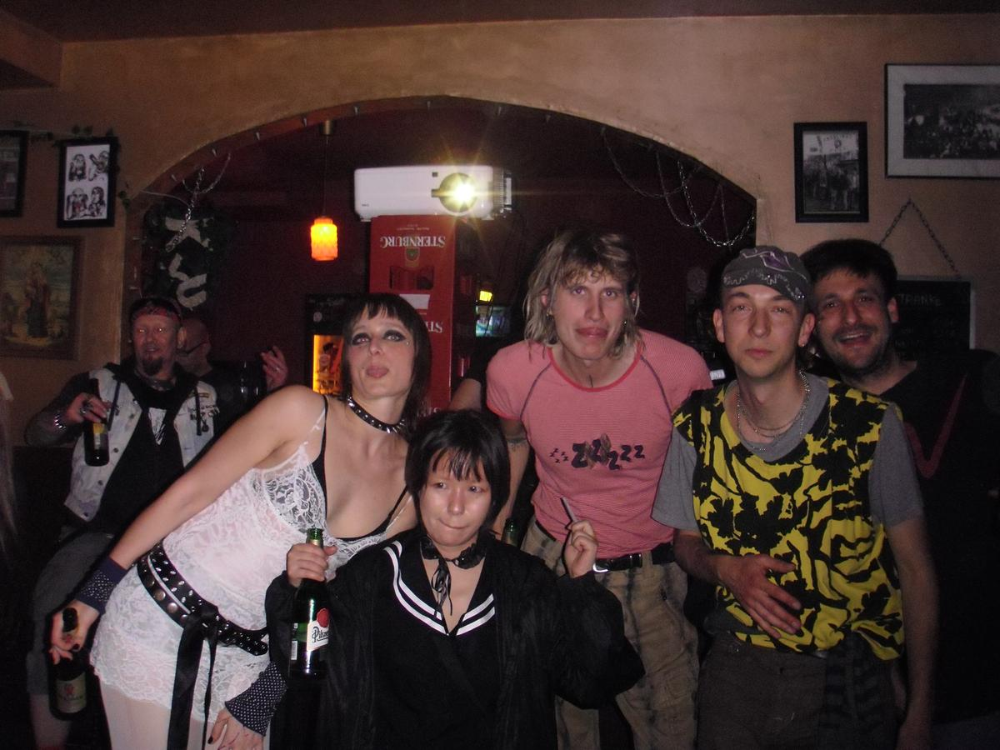
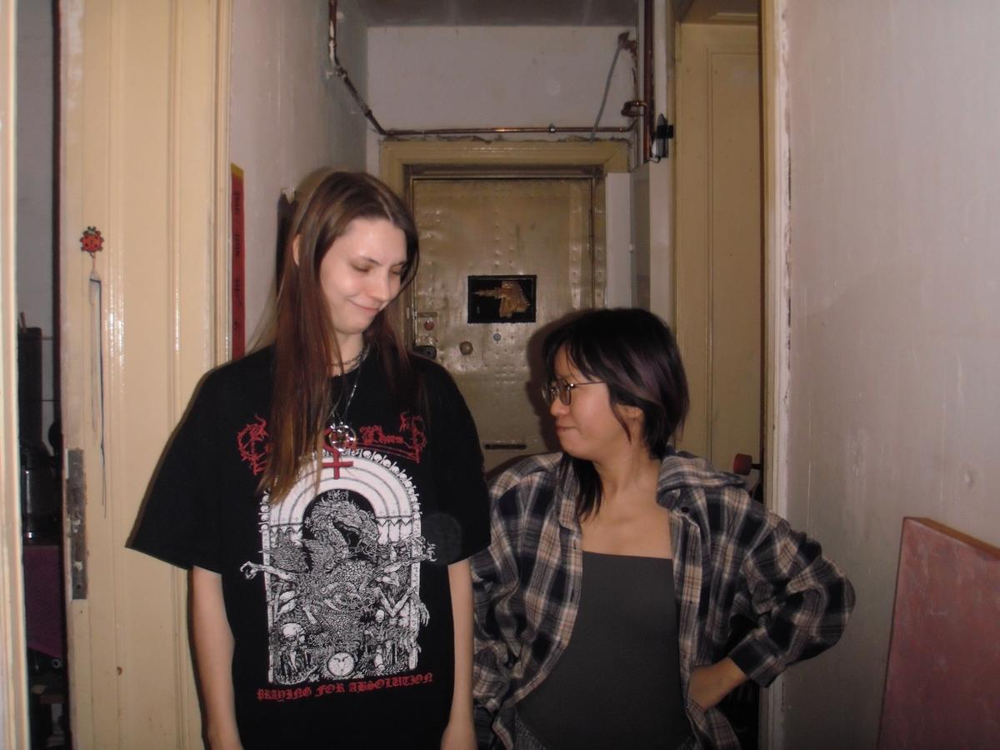

Recently I've been going through some big changes in my life. I've been feeling old lately... I kinda stopped going out, have been sober and being healthy, and am focusing on making art a lil low-key, working quite a lot to survive. upgraded my gear, made my room cozy, and it brings me so much joy :) Is it cherry blossom season already? I feel like Berlin is such a deconstructive city, it makes everyone reflect on themselves: relationships, jobs, housing, mental health. You either get lost or find out who you want to become.
I'm not sure where I stand yet tho. I'm super ADHD all the time, so many things want to do I have to write down every hour what I need to do, even just drinking water. music, collective, printmaking, art, design, job, nails, they're all like my meditative side quests. This year, I feel like I don't want to compete with anyone anymore. I don't need to try to be cool or whatever, don't need to prove anything to anyone. As long as we do what we want to do and feel fulfilled & that's enough. Feeling super grateful about people surround me u all really support me, no matter who encountered my life, past, now, or future, if our path came across, I believe it's all fate that bring us together & progress :)